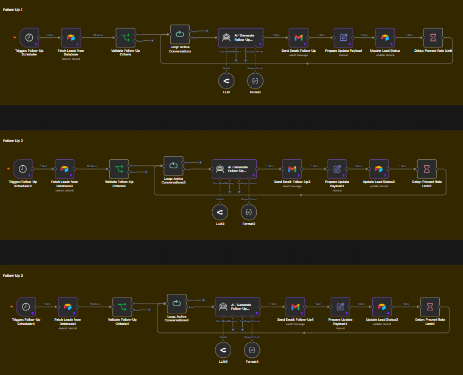

Follow-Up Automation System
Turn missed leads into booked calls — automatically.

The Problem
Most businesses generate leads… but fail to follow up properly.
- 80% of sales require 5+ follow-ups
- Most businesses stop after 1–2 attempts
- Warm leads go cold due to lack of consistency
This results in lost revenue — not because of bad leads, but poor follow-up.
Why This Matters
You already paid to acquire the lead.
If you don’t follow up — your competitors will.
This system ensures every lead is nurtured until they convert or drop off.
How The System Works
- Triggered when a lead fills a form, books a call, or shows interest
- Automated multi-step follow-up sequence begins
- Messages sent via Email / WhatsApp / Instagram
- Personalized responses using CRM data
- Smart timing and spacing between messages
- Stops automatically when lead replies or books
- Sales team gets notified with full context
Who This Is For
- Coaches & consultants
- Agencies
- B2B service businesses
- High-ticket sales teams
- Anyone generating consistent leads
Business Impact
Increasing follow-up consistency alone can dramatically improve revenue.
- Higher conversion rates from existing leads
- More booked calls without extra ad spend
- Consistent pipeline growth
- No leads slipping through cracks
Example: Turning the same leads into 2–3x more revenue just by better follow-up.
Book This System →